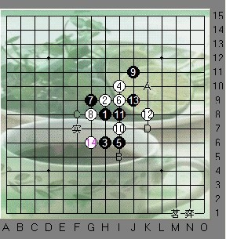
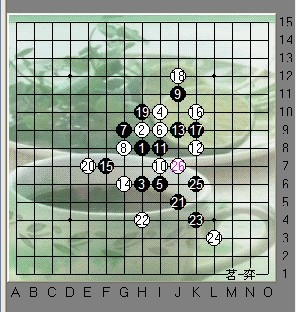
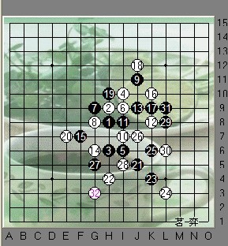
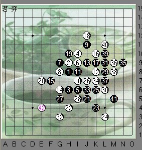
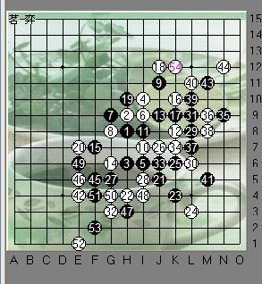
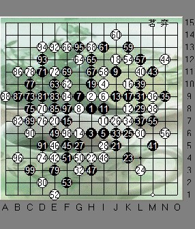
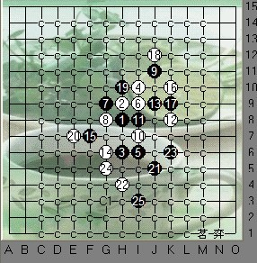

吴镝声惊四座的拍下42（第三轮）VS艾显平
#1 吴镝声惊四座的拍下42（第三轮）VS艾显平作者：茗弈小刀 发表时间：2009-10-4 13:04:41
天地宽，秋水长，万里晴空舞云裳；中秋月，国运昌，九洲同庆金桂香；举玉杯，话炎凉，不觉风高雁成行。祝福，快乐，安康，寄与众生普天光。
在喜迎国庆60圣诞之日，也是中秋家家团圆之际。合着祖国的步伐节拍，我们五子棋的2009全锦赛于2号在河北举办。选手们把对祖国的热爱，化作一腔热血，倾注在小小连珠上。
在第三轮我们的中原一点红--吴镝（执白）与湖北的艾显平老师（执黑）对上了：

瑞星开局，这个白12是变招，最早出现在2000年在镇江“林机杯”比赛中，近两年也比较流行，13最强14正常，而15手这里变化比较复杂了，见上图。A，B点个人感觉较强劲，C点是最近流行的新点，比较考验白棋，D点可战。实战中黑棋这手15果断！

16--20手显示了白棋深厚的防守技巧，22是否有点问题呢？最后我们在分析下吧。23，25继续进攻拓展右边棋型，黑棋的进攻看来很凶猛！而白棋并不惊慌，26准确的落子唯一防处。

可能考虑到20。22这个大跳活二。27手在防守中进攻。28反。黑棋右边的优势岂肯轻易丢呢，29活二做一手，白棋目光敏锐的注意到下边的眠三，档住。31手眠三活二。白此时没有直接去防守，如果一直跟防，白显得太被动。所以32手白棋用进攻去防守。很积极这手棋！

黑继续进攻，但后边的进攻不太成功。冲完后41手反而去防守白棋了。此时黑棋右边已经再没有什么东西了，而且失去了先手。42，白棋抓住机会，反击了！这手棋是全局的亮点！！彻底扭转了局面。当然前边的20，22和32手攻不可没！战况此时千钧一发！

黑面临着严峻考验，43活三控制白36，38往上边发展。45这个点也找得相当精确，这样的情况下，一手错了可能就会导致挂掉。46-51交换完毕。52白没有直接去防活三，而是巧妙的做了个禁。那么白现在仍牢牢掌握着先手。下边暂时没有好的进攻路线，54白转去了上边。

55-61黑棋在进攻中去防守，消磨了白右边和右上的空间及优势。现在空间只剩左上了，62。63交换控制。66，68白不甘心进攻，69黑以2个眠二防守。70活2，71黑大跳眠三，活二进攻。72断开眠三。此时左边也面临盘端问题，看来和棋了。白棋在左下展开进攻，而黑在左上进攻，但未果，至99手双方和棋。
这盘棋有2个地方是重点，其一我开始提到的42手，是白棋的一个转折；其二，对于22手，是否有漏洞呢？实战我们看到黑23，25比较凶猛地在右下展开进攻，那么黑这里有杀吗？当然实战归实战，诸多原因不可能算那么细致，我们后来分析了一下，其实23手黑可以直接杀了。如图：

如果23不先冲3，直接在这个位置眠三活二，那么这个24是唯一，25这里杀了。22手正确位置下哪里呢？欢迎大家跟贴交流讨论下。
从这盘棋我们学习到吴镝老师厚实的防御棋力，也学习到艾老师勇猛的进攻性，非常精彩的一局，为二位老师喝彩！祝以后比赛取得更优异的成绩！
［ 潇洒 于 2009-10-4 13:07:08 时奖励此帖[金币加 20 威望加1］
［ 慎独 于 2009-10-4 13:29:26 时花20金币送鲜花一朵］
［ 慎独 于 2009-10-4 13:29:33 时花20金币送鲜花一朵］
［ 慎独 于 2009-10-4 13:29:40 时花20金币送鲜花一朵］
［ 慎独 于 2009-10-4 13:29:58 时花20金币送鲜花一朵］
［ 慎独 于 2009-10-4 13:30:05 时花20金币送鲜花一朵］
［ 慎独 于 2009-10-4 13:30:12 时花20金币送鲜花一朵］
［ 慎独 于 2009-10-4 13:30:52 时花20金币送鲜花一朵］
［ 慎独 于 2009-10-4 13:31:01 时花20金币送鲜花一朵］
［ 慎独 于 2009-10-4 13:31:09 时花20金币送鲜花一朵］
［ 慎独 于 2009-10-4 13:31:17 时花20金币送鲜花一朵］
［ 茗奕的飞猪 于 2009-10-4 13:32:57 时花20金 #2 Re:吴镝声惊四座的拍下42（第三轮）VS艾显平作者：怪 发表时间：2009-10-4 13:06:08 #3 Re:吴镝声惊四座的拍下42（第三轮）VS艾显平作者：茗弈求学 发表时间：2009-10-4 13:16:45 #4 Re:吴镝声惊四座的拍下42（第三轮）VS艾显平作者：玉水凌风 发表时间：2009-10-4 13:19:17 #5 Re:吴镝声惊四座的拍下42（第三轮）VS艾显平作者：wsmwy 发表时间：2009-10-4 13:19:59 学习了，才女！ #6 Re:吴镝声惊四座的拍下42（第三轮）VS艾显平作者：吃大米饭的鱼 发表时间：2009-10-4 13:22:10 #7 Re:吴镝声惊四座的拍下42（第三轮）VS艾显平作者：丑小鸭 发表时间：2009-10-4 13:23:39 #8 Re:吴镝声惊四座的拍下42（第三轮）VS艾显平作者：玉水凌风 发表时间：2009-10-4 13:26:07 #9 Re:吴镝声惊四座的拍下42（第三轮）VS艾显平作者：独爱五子连珠 发表时间：2009-10-4 13:26:27 #10 Re:吴镝声惊四座的拍下42（第三轮）VS艾显平作者：飞哥 发表时间：2009-10-4 13:27:49 #11 Re:吴镝声惊四座的拍下42（第三轮）VS艾显平作者：慎独 发表时间：2009-10-4 13:31:54 #12 Re:吴镝声惊四座的拍下42（第三轮）VS艾显平作者：茗奕的飞猪 发表时间：2009-10-4 13:33:53 #13 Re:吴镝声惊四座的拍下42（第三轮）VS艾显平作者：茗弈真实的谎言 发表时间：2009-10-4 13:35:06 #14 Re:吴镝声惊四座的拍下42（第三轮）VS艾显平作者：岑小鱼 发表时间：2009-10-4 13:53:29 写的好~~ （不过D点是败的，论坛上都出谱好久啦） 实战就是实战 跟平时的研究分析完全不一样 #15 Re:吴镝声惊四座的拍下42（第三轮）VS艾显平作者：木木夕 发表时间：2009-10-4 14:31:53 #16 Re:吴镝声惊四座的拍下42（第三轮）VS艾显平作者：木木夕 发表时间：2009-10-4 14:34:03 #17 Re:吴镝声惊四座的拍下42（第三轮）VS艾显平作者：慕 发表时间：2009-10-4 14:37:54 #18 Re:吴镝声惊四座的拍下42（第三轮）VS艾显平作者：寂寞的烟 发表时间：2009-10-4 14:41:19 #19 Re:吴镝声惊四座的拍下42（第三轮）VS艾显平作者：踏雪小子 发表时间：2009-10-4 14:44:39 #20 Re:吴镝声惊四座的拍下42（第三轮）VS艾显平作者：梦醉南天 发表时间：2009-10-4 15:10:26 #21 Re:吴镝声惊四座的拍下42（第三轮）VS艾显平作者：越狱行辕 发表时间：2009-10-4 16:01:48 #22 Re:吴镝声惊四座的拍下42（第三轮）VS艾显平作者：千羽鹤 发表时间：2009-10-4 19:17:20 我认为20手的问题？这个变化我不太了解，但是有一个变化我常常下，很相似 16手略有不同，但对下方黑棋没有影响，白棋难防，20手白棋用进攻消耗黑棋如何，L10？ #23 Re:吴镝声惊四座的拍下42（第三轮）VS艾显平作者：梦婷 发表时间：2009-10-4 20:20:40 #24 Re:吴镝声惊四座的拍下42（第三轮）VS艾显平作者：老黄 发表时间：2009-10-4 20:39:12 #25 Re:吴镝声惊四座的拍下42（第三轮）VS艾显平作者：静待花开 发表时间：2009-10-4 22:36:33 宝贝又写文章了？好喜欢。 #26 Re:吴镝声惊四座的拍下42（第三轮）VS艾显平作者：高星 发表时间：2009-10-5 8:28:00 #27 Re:Re:吴镝声惊四座的拍下42（第三轮）VS艾显平作者：岑小鱼 发表时间：2009-10-5 12:28:26 #28 Re:Re:Re:吴镝声惊四座的拍下42（第三轮）VS艾显平作者：茗弈宽容 发表时间：2009-10-5 15:58:03 #29 Re:吴镝声惊四座的拍下42（第三轮）VS艾显平作者：茗弈宽容 发表时间：2009-10-5 16:04:45 #30 Re:吴镝声惊四座的拍下42（第三轮）VS艾显平作者：gigiqi 发表时间：2009-10-5 17:06:07 ［ 茗弈宽容 于 2009-10-6 9:50:23 时花20金币送鲜花一朵］ #31 Re:吴镝声惊四座的拍下42（第三轮）VS艾显平作者：uniwin 发表时间：2009-10-5 17:39:49 D败点的变化详细见-吴镝的帖子-曾经的实战和EMAIL比赛这个变化还很流行 ［ 茗弈宽容 于 2009-10-6 10:30:01 时花20金币送鲜花一朵］ #32 Re:吴镝声惊四座的拍下42（第三轮）VS艾显平作者：无解 发表时间：2009-10-6 10:18:08 支持 ！！ 姐姐 分析的太细致了 那是没的说了 刚刚决赛结束了 我相信我们的小刀姐正在忙碌写下篇棋枰呢！ 25就地毯了 要是这个谱之前都知道了没意思啦！ 不过高飞老师持黑棋实在是有独到的地方 吴镝老师的防守的强大令学生更加佩服了！ ［ 茗弈宽容 于 2009-10-6 10:28:55 时花20金币送鲜花一朵］ #33 Re:吴镝声惊四座的拍下42（第三轮）VS艾显平作者：坏蛋色色色 发表时间：2009-10-6 12:09:45


 想送花，没金笔了
想送花，没金笔了
 受益非浅!!!姐姐辛苦了~~
受益非浅!!!姐姐辛苦了~~ 强！辛苦了！
强！辛苦了！
=======上图对应的爱五子棋谱代码如下，以便你拆解：========
h8h9h6i10i6i9g9g8j11i7i8k8j9g6h10i11f7k10k9e7j5
====================================================== 吃大米饭的鱼
吃大米饭的鱼
引用：
哪篇？
原文由 岑小鱼 发表于 2009-10-5 12:28:26 :
D败点的变化详细见 无敌天下里面的第一个主题 刚顶上来了  12跳流行15必败谱.rar
12跳流行15必败谱.rar